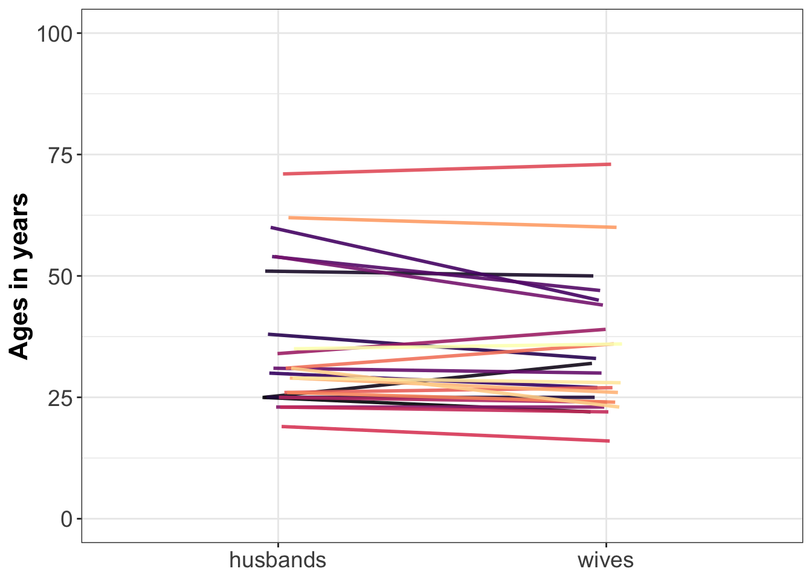

Notebook 7: Perspectives on group comparisons
Dependencies
library(ggplot2)
library(tibble)
source("./code/theme_gar.txt")
library(ggbeeswarm)
source("./code/Rallfun-v35-simplified.txt")
source("./code/summarySE.txt") # Define summary function
# Code from:
# http://www.cookbook-r.com/Graphs/Plotting_means_and_error_bars_(ggplot2)/Example: within x between design
The example is from a 2016 editorial published in the European Journal of Neuroscience.
Load data
data <- read.csv("./data/ejn_data.csv",header=T)
data$participant <- factor(data$participant)Bar graph
datas <- summarySE(data, measurevar="value", groupvars=c("group","condition"))
bargraph <- ggplot(datas, aes(x=group, y=value, fill=condition)) +
theme_bw() +
geom_bar(position=position_dodge(), stat="identity", colour="black") +
geom_errorbar(aes(ymin=value-se, ymax=value+se),
width=.2, # Width of the error bars
position=position_dodge(.9)) +
scale_fill_manual(values = c("#E69F00", "#56B4E9")) +
theme(axis.text.x = element_text(colour="grey20",size=16),
axis.text.y = element_text(colour="grey20",size=16),
axis.title.x = element_blank(),
axis.title.y = element_blank(),
legend.title = element_blank(),
legend.text = element_text(colour="grey20",size=16),
legend.key = element_rect(colour = "black",size=.1),
legend.position = c(.15, .90),
# plot.margin = unit(c(150,100,5.5,5.5), "pt"),
plot.margin = unit(c(5.5,5.5,5.5,5.5), "pt"),
plot.title = element_text(colour="grey20",size=20)) +
labs(title="Mean +/- SEM") +
scale_y_continuous(limits=c(0, 15),breaks=seq(0,15,5))
bargraph1D scatterplots = stripcharts of differences
value <- data$value[data$condition=="condition2"]-data$value[data$condition=="condition1"]
participant <- data$participant[data$condition=="condition2"]
group <- data$group[data$condition=="condition2"]
diff <- data.frame(participant,group,value)
set.seed(8)
diffstrip <- ggplot(diff, aes(x=group, y=value, fill=group, colour=group, shape=group)) + theme_bw() +
geom_abline(intercept = 0, slope = 0) +
geom_jitter(position=position_jitter(0.1), size=4, stroke=1, alpha=0.6) +
scale_shape_manual(values=c(22,21)) +
scale_fill_manual(values = c("grey70", "grey95")) +
scale_colour_manual(values = c("grey5","grey5")) +
theme(legend.position="none",
axis.text.x = element_text(colour="grey20",size=16),
axis.text.y = element_text(colour="grey20",size=16),
axis.title.x = element_blank(),
axis.title.y = element_blank(),
plot.title = element_text(colour="grey20",size=20),
plot.margin = unit(c(5.5,5.5,5.5,5.5), "pt")) +
# plot.margin = unit(c(150,200,5.5,5.5), "pt")
labs(title="Differences: condition1 - condition2") +
scale_y_continuous(limits=c(-2.5, 3.5),breaks=seq(-2,3,1))
diffstripStripchart + linked observations
p <- ggplot(data, aes(x=condition, y=value, fill=condition, group=participant,shape=group)) + theme_bw() +
geom_line(size=1, alpha=1) +
geom_point(colour = "black", size = 4, stroke = 1) +
scale_shape_manual(values=c(22,21)) +
scale_fill_manual(values = c("#E69F00", "#56B4E9")) +
theme(axis.text.x = element_text(colour="grey20",size=16),
axis.text.y = element_text(colour="grey20",size=16),
axis.title.x = element_blank(),
axis.title.y = element_blank(),
plot.title = element_text(colour="grey20",size=20),
legend.position="none",
# plot.margin = unit(c(150,100,5.5,5.5), "pt")
plot.margin = unit(c(5.5,5.5,5.5,5.5), "pt")) +
labs(title="Paired observations") +
scale_y_continuous(limits=c(0, 20),breaks=seq(0,20,5))
# p
linkedstrip <- p + facet_grid(. ~ group) +
theme(strip.text.x = element_text(size = 20, colour = "white"),
strip.background = element_rect(colour="darkgrey", fill="darkgrey"))
linkedstripScatterplot of paired observations
condition1 <- data$value[data$condition=="condition1"]
condition2 <- data$value[data$condition=="condition2"]
participant <- data$participant[data$condition=="condition2"]
group <- data$group[data$condition=="condition2"]
rdata <- data.frame(participant,group,condition1,condition2)
scatterdiff <- ggplot(rdata, aes(x=condition1,y=condition2,group=group,fill=group,colour=group,shape=group)) +
geom_abline(intercept = 0) +
geom_point(size=4,stroke=1, alpha = 0.6) +
theme_bw() +
scale_shape_manual(values=c(22,21)) +
scale_fill_manual(values = c("grey70", "grey95")) +
scale_colour_manual(values = c("grey5","grey5")) +
theme(axis.text.x = element_text(colour="grey20",size=16),
axis.text.y = element_text(colour="grey20",size=16),
axis.title.x = element_text(colour="grey20",size=18),
axis.title.y = element_text(colour="grey20",size=18),
legend.title = element_blank(),
legend.position = c(.15, .90),
plot.margin = unit(c(5.5,5.5,5.5,5.5), "pt"),
legend.text = element_text(colour="grey20",size=16),
plot.title = element_text(colour="grey20",size=20)) +
labs(title="Paired observations") +
scale_x_continuous(limits=c(6, 16),breaks=seq(6,16,2)) +
scale_y_continuous(limits=c(6, 19),breaks=seq(6,19,2))
scatterdiffExamples of standard group statistics
Stats results as reported in the EJN editorial.
2 x 2 ANOVA
aov_gp_cond <- aov(value ~ group*condition + Error(participant/condition), data=data)
summary(aov_gp_cond)##
## Error: participant
## Df Sum Sq Mean Sq F value Pr(>F)
## group 1 4.4 4.43 0.261 0.615
## Residuals 20 339.6 16.98
##
## Error: participant:condition
## Df Sum Sq Mean Sq F value Pr(>F)
## condition 1 3.986 3.986 7.509 0.01261 *
## group:condition 1 4.430 4.430 8.345 0.00908 **
## Residuals 20 10.617 0.531
## ---
## Signif. codes: 0 '***' 0.001 '**' 0.01 '*' 0.05 '.' 0.1 ' ' 1Group 1 t-test
x <- data[data$group=="group1" & data$condition=="condition1" ,"value"]
y <- data[data$group=="group1" & data$condition=="condition2" ,"value"]
t.test(x,y,paired=T)##
## Paired t-test
##
## data: x and y
## t = -3.8742, df = 10, p-value = 0.003088
## alternative hypothesis: true difference in means is not equal to 0
## 95 percent confidence interval:
## -1.9477091 -0.5253818
## sample estimates:
## mean of the differences
## -1.236545Group 2 t-test
x <- data[data$group=="group2" & data$condition=="condition1" ,"value"]
y <- data[data$group=="group2" & data$condition=="condition2" ,"value"]
t.test(x,y,paired=T)##
## Paired t-test
##
## data: x and y
## t = 0.1081, df = 10, p-value = 0.9161
## alternative hypothesis: true difference in means is not equal to 0
## 95 percent confidence interval:
## -0.6400830 0.7053557
## sample estimates:
## mean of the differences
## 0.03263636Make final figure combining 4 panels
require(cowplot)
set.seed(8)
cowplot::plot_grid(bargraph, diffstrip, linkedstrip, scatterdiff,
labels=c("A", "B", "C", "D"),
ncol = 2,
nrow = 2,
rel_heights = c(1, 1),
label_size = 18,
hjust = -1,
scale=.95)
ggsave(filename='./figures/ejn_summary_figure.pdf', units = "cm", width = 30, height = 30)Two dependent groups
Here are two vectors of ages of husbands and wives. The two vectors are matching, such that husbands[1] is married to wives[1].
husbands <- c(25,25,51,25,38,30,60,54,31,54,23,34,25,23,19,71,26,31,26,62,29,31,29,35)
wives <- c(22,32,50,25,33,27,45,47,30,44,23,39,24,22,16,73,27,36,24,60,26,23,28,36)
n.couple <- length(wives)Illustrate results
Make data frame
df <- tibble(couple = rep(1:n.couple, 2),
age = c(husbands, wives),
group = rep(c("husbands", "wives"), each = n.couple))Independent stripcharts (1D scatterplots)
set.seed(44) # reproducible jitter
ggplot(df, aes(x = group,
y = age,
fill = group)) +
geom_jitter(alpha = 0.7,
shape = 21,
size = 4,
width = .15) +
scale_fill_manual(values=c("#E69F00", "#56B4E9")) +
theme_bw() +
theme(legend.position = "none") +
theme(axis.title.y = element_text(size=16,face="bold"),
axis.title.x = element_blank(),
axis.text = element_text(size=14)) +
ylab("Ages in years") +
scale_y_continuous(limits = c(0, 100))
Stripcharts with medians
set.seed(44) # reproducible jitter
# compute medians
md.h <- median(husbands)
md.w <- median(wives)
ggplot(df, aes(x = group,
y = age,
fill = group)) +
geom_jitter(alpha = 0.7,
shape = 21,
size = 4,
width = .15) +
scale_fill_manual(values=c("#E69F00", "#56B4E9")) +
theme_bw() +
theme(legend.position = "none") +
theme(axis.title.y = element_text(size=16,face="bold"),
axis.title.x = element_blank(),
axis.text = element_text(size=14)) +
ylab("Ages in years") +
scale_y_continuous(limits = c(0, 100)) +
# add median for husbands
geom_segment(aes(x = 0.75, y = md.h, xend = 1.25, yend = md.h), size = 1, colour = "black") +
# add median for wives
geom_segment(aes(x = 1.75, y = md.w, xend = 2.25, yend = md.w), size = 1, colour = "black")Linked stripcharts
Coloured lines link paired observations.
set.seed(44) # reproducible jitter
pd <- position_dodge(width = 0.1)
ggplot(df, aes(x=group, y=age, group=couple)) + theme_bw() +
geom_line(aes(colour=couple),size=1, alpha=.9,
position=pd) +
scale_colour_viridis_c(option = "A") +
theme(axis.text = element_text(size=14),
axis.title.x = element_blank(),
axis.title.y = element_text(size=16,face="bold"),
legend.position="none") +
# ylab("Scores (a.u.)") +
# scale_x_discrete(labels = c("condition1" = "Condition 1","condition2" = "Condition 2")) +
scale_y_continuous(limits=c(0, 100)) +
ylab("Ages in years")
1D scatterplot = stripchart of differences
set.seed(44) # reproducible jitter
df.diff <- tibble(couple = 1:n.couple,
difference = husbands - wives,
gr = rep("gr", n.couple))
ggplot(df.diff, aes(x=gr, y=difference)) +
geom_abline(intercept = 0, slope = 0, linetype = 2) + # zero reference line
geom_jitter(alpha = 0.7,
shape = 21,
size = 2,
width = .15,
colour = "grey10",
fill = "grey90") +
theme_bw() +
theme(legend.position="none",
axis.ticks.x = element_line(colour="white"),
axis.text.x = element_text(size=14,colour="white"),
axis.text.y = element_text(size=14),
axis.title.x = element_text(size=16,face="bold",colour="white"),
axis.title.y = element_text(size=16,face="bold"),
plot.title = element_text(colour="black",size=20),
panel.grid.major.x = element_blank(),
panel.grid.minor.x = element_blank()) +
ylab("Differences") +
scale_y_continuous(limits=c(-10, 20), breaks=seq(-10, 20, 5))Scatterplot of paired observations
# make new data frame for paired data
df.p <- tibble(husbands = husbands,
wives = wives)
ggplot(df.p, aes(x = wives, y = husbands)) + theme_bw() +
geom_point(alpha = 0.7,
shape = 21,
size = 4,
colour = "grey10",
fill = "grey90") +
geom_abline(intercept = 0,
slope = 1,
linetype = "longdash") + # slope 1 reference line
theme(axis.title = element_text(size=16,face="bold"),
axis.text = element_text(size=14)) +
xlab("Wives") +
ylab("Husbands") +
scale_x_continuous(breaks = seq(20, 70, 10)) +
theme(plot.title = element_blank())Compare marginals
Treated as two independent groups, are men older than women?
# percentile bootstrap confidence interval of the difference between
# medians, treating the groups as independent
pb2gen(husbands, wives, alpha=.05, nboot=2000, est=median)## $est.1
## [1] 30.5
##
## $est.2
## [1] 29
##
## $est.dif
## [1] 1.5
##
## $ci
## [1] -8.0 7.5
##
## $p.value
## [1] 0.833
##
## $sq.se
## [1] 16.99839
##
## $n1
## [1] 24
##
## $n2
## [1] 24Quantify within couple differences
Can we conclude that, within a couple, the wife tends to be older than the husband?
# Compute confidence interval of the median of the paired differences
onesampb(husbands - wives, alpha=.05, nboot=2000, est=median)## $ci
## [1] 0.5 3.0
##
## $n
## [1] 24
##
## $estimate
## [1] 1
##
## $p.value
## [1] 0.025Summary statistics
summary(husbands - wives)## Min. 1st Qu. Median Mean 3rd Qu. Max.
## -7.000 -0.250 1.000 1.875 3.000 15.000\(P(diff > 0)\)
cdiff <- husbands - wives
mean(cdiff > 0)## [1] 0.6666667\(P(diff > 0)\) + confidence interval
Define function
Probability than x is larger than zero.
pxlz<- function(x){
mean(x > 0)
}Percentile bootstrap
onesampb(cdiff, alpha=.05, nboot=2000, est=pxlz)## $ci
## [1] 0.4583333 0.8333333
##
## $n
## [1] 24
##
## $estimate
## [1] 0.6666667
##
## $p.value
## [1] 0Two independent groups
A study assessed the effects of ozone on weight gain in rats. The ozone group consisted of 22 70-day old rats kept in an ozone environment for 7 days. The control group consisted of 23 rats of the same age, kept in an ozone-free environment. Here are the weight gains, in grams, for each group:
control <- c(41, 38.4, 24.4, 25.9, 21.9, 18.3, 13.1, 27.3, 28.5, -16.9, 26, 17.4, 21.8, 15.4, 27.4, 19.2, 22.4, 17.7, 26, 29.4, 21.4, 26.6, 22.7)
ozone <- c(10.1, 6.1, 20.4, 7.3, 14.3, 15.5, -9.9, 6.8, 28.2, 17.9, -9, -12.9, 14, 6.6, 12.1, 15.7, 39.9, -15.9, 54.6, -14.7, 44.1, -9)
n.control <- length(control)
n.ozone <- length(ozone)Illustrate results
Make data frame
df <- tibble(weight.gain = c(control, ozone),
group = c(rep("control", n.control), rep("ozone", n.ozone)))Stripcharts with medians
set.seed(44) # reproducible jitter
ggplot(df, aes(x = group,
y = weight.gain,
fill = group)) +
geom_jitter(alpha = 0.7,
shape = 21,
size = 4,
width = .15) +
scale_fill_manual(values=c("#E69F00", "#56B4E9")) +
theme_bw() +
theme(legend.position = "none") +
theme(axis.title.y = element_text(size=16,face="bold"),
axis.title.x = element_blank(),
axis.text = element_text(size=14)) +
ylab("Weight gain in grams") +
coord_cartesian(ylim = c(-30, 60)) +
stat_summary(fun.y = median, fun.ymin = median, fun.ymax = median,
geom = "crossbar", width = 0.3) +
stat_summary(fun.y = mean, fun.ymin = mean, fun.ymax = mean,
geom = "crossbar", width = 0.3, colour = "purple",
fun.args = list(trim = 0.2))These illustrations suggest differences in central tendency and spread between the two groups, as well as overlap, in part due to one or more outliers in the control group. The control group seems overall to gain more weights, with less inter-animal variability than the ozone group.
Compare 20% trimmed means
out <- pb2gen(control, ozone, alpha=.05, nboot=2000,
est=mean, trim = 0.2)Difference between marginal trimmed means = 14.1, [5, 22.2], P=0.005.
All pairwise differences
Compute
apd <- as.vector(outer(control, ozone, FUN="-"))All pairwise differences: implementation
x <- 1:5
y <- 1:5
outer(x,y,FUN="-")## [,1] [,2] [,3] [,4] [,5]
## [1,] 0 -1 -2 -3 -4
## [2,] 1 0 -1 -2 -3
## [3,] 2 1 0 -1 -2
## [4,] 3 2 1 0 -1
## [5,] 4 3 2 1 0Illustrate
Make kernel density plot of all pairwise differences
ggplot(tibble::enframe(apd), aes(value)) + theme_bw() +
geom_density(alpha = 1 , fill = "grey95", colour = "black") +
geom_vline(xintercept = 0, linetype = "dashed") + # zero reference line
geom_vline(xintercept = median(apd)) + # median difference
theme(legend.position="none",
axis.text = element_text(size=14),
axis.title = element_text(size=16,face="bold")) +
ylab("Density") +
xlab("All pairwise differences")Median of all pairwise differences
For a measure of effect size preserving the original units, we could report the median of all pairwise differences and its percentile bootstrap confidence interval:
out <- wmwpb(control,ozone,est=median,alpha=.05,nboot=2000)Median of all pairwise differences = 11.95 [5.3, 21.2], P=0.006.
This measure answer the questions: what is the typical difference between two observations selected at random from the two groups?
\(P(X>Y)\)
Given two observations selected at random from these two groups, what is the probability that an observation from group 1 will be larger than one in group 2?
Using the cid() function:
out <- cid(control, ozone)
out$summary.dvals[3]## [1] 0.7608696cid() also returns the complementary probability \(P(X<Y)\) and the robust ordinal measure of effect size known as Cliff’s delta: \(d = P(X>Y) - P(X<Y)\).
Make our own function to compute the probability that X is greater than Y:
pxgy <- function(x,y){
mean(outer(x,y,FUN="-") > 0)
}Use it:
pxgy(control, ozone)## [1] 0.7608696Confidence interval:
set.seed(21)
nboot <- 2000
b.res <- vector(mode = "numeric", length = nboot)
for(B in 1:nboot){
b.res[B] <- pxgy(sample(control, n.control, replace = TRUE),
sample(ozone, n.ozone, replace = TRUE))
}
quantile(b.res, probs = c(0.025, 0.975))## 2.5% 97.5%
## 0.5928360 0.9071146
Guillaume A. Rousselet, 2019, University of Glasgow.